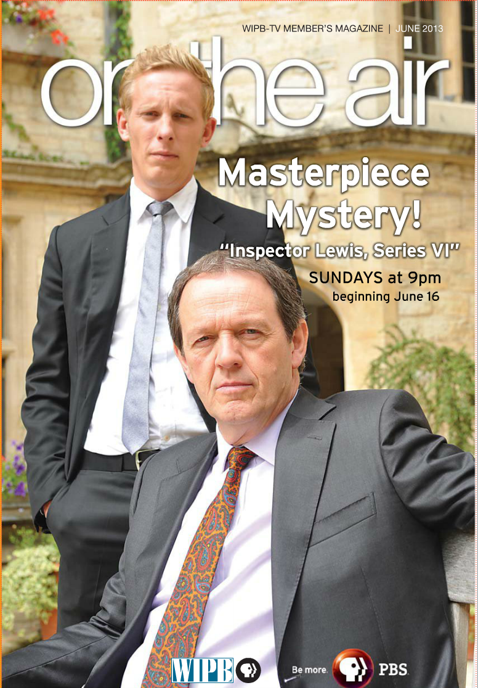
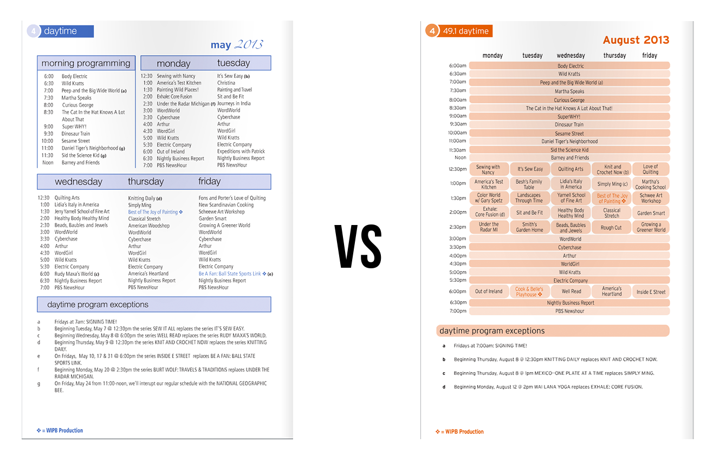

WIPB is a PBS member television station located in Muncie, Indiana.
I worked primarily on the station's member magazine, On The Air, writing articles and designing covers, pages and special event ads.

feature article/page design, 2013
cover design, 2013
page redesign, 2013